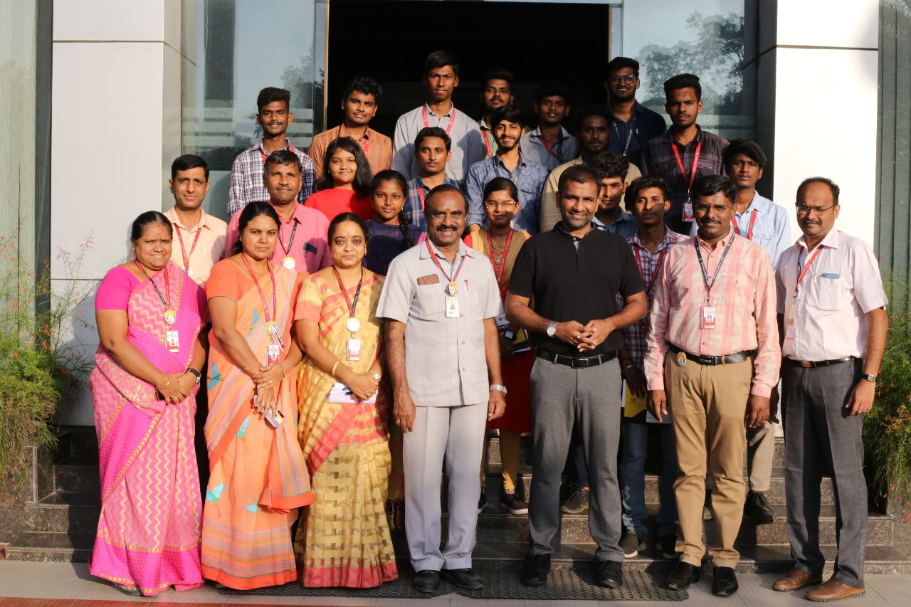
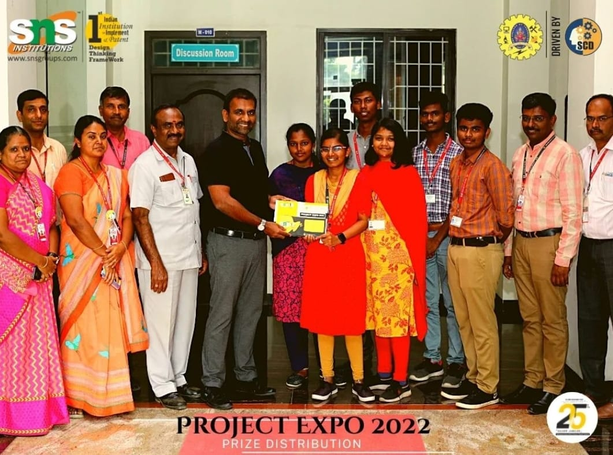
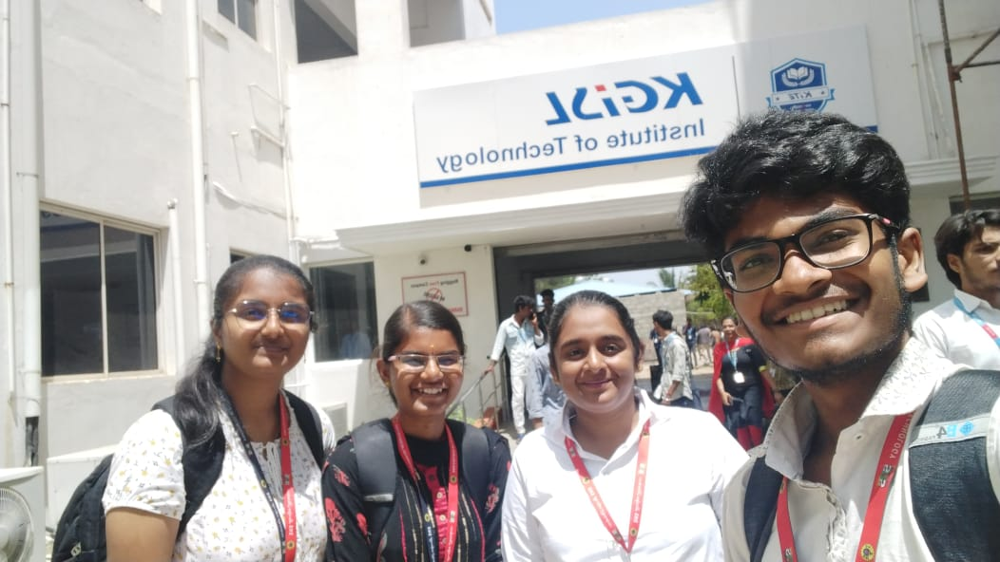
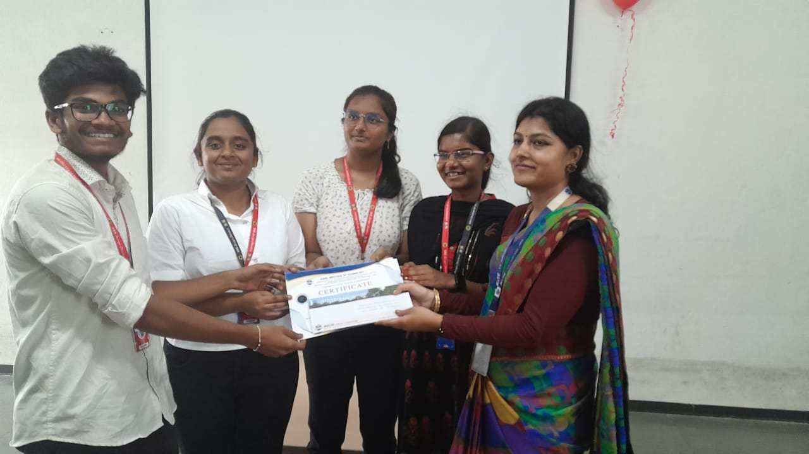
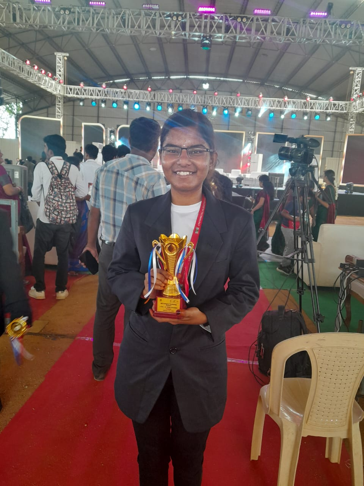
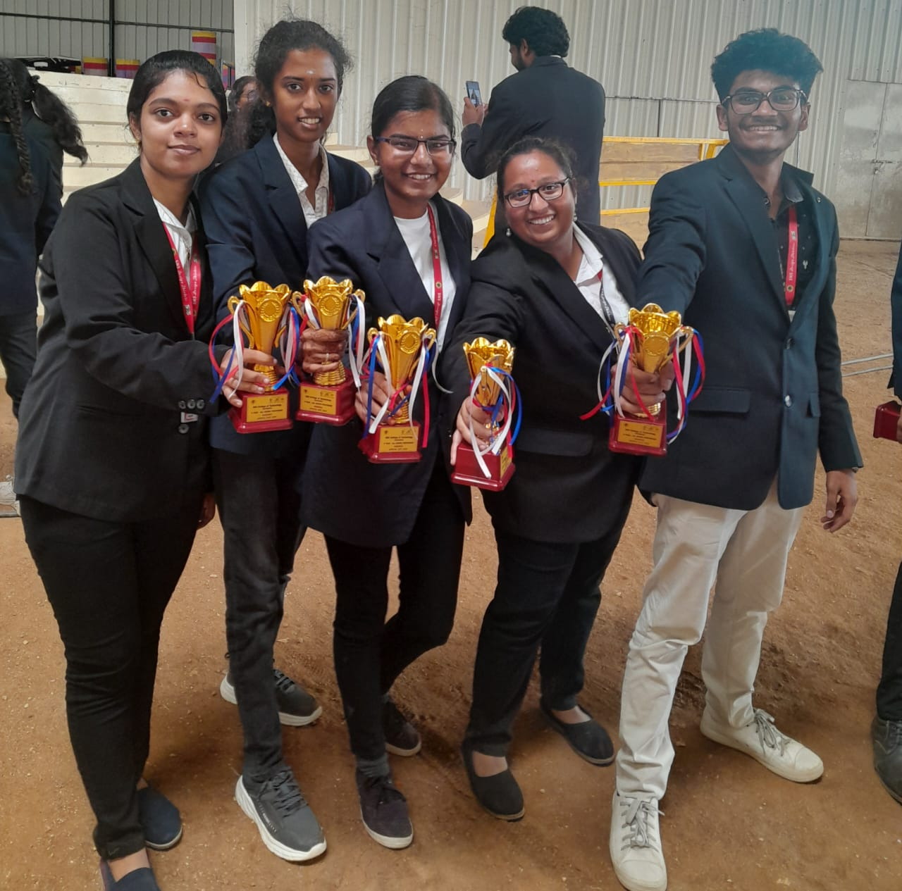
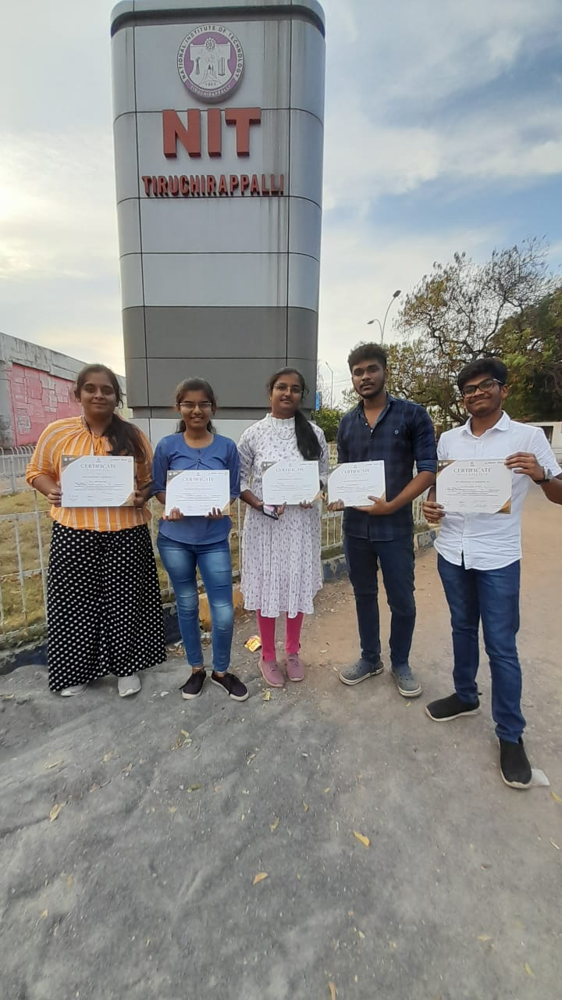

Hi everyone,
Myself Megavarshini from Coimbatore, currently pursuing my bachelors in Computer Science & Engineering at SNS College OF Technology. As of now I'm maintaing a GPA of 9.3. With a passion for cybersecurity, My ambition is to become a Chief Security Analyst.
Through my academic journey and hands-on experiences, I’ve developed a strong foundation in threat analysis, network security, and ethical hacking. I am committed to continuously learning and advancing my skills in cybersecurity to lead efforts in protecting organizations from evolving cyber threats and ensuring robust security frameworks.
Professional Summary
Passionate about leveraging innovative solutions to enhance digital security and protect critical information. Adept at driving impactful results and continuously learning to excel in evolving industries.
Educational Qualification
Vijayalakshmi Matric Hr Sec School
(2020)
SSCL - 77.7%
Vijayalakshmi Matric Hr Sec School
(2022)
HSC - 91.2%
SNS COLLEGE OF TECHNOLOGY
(2022-2026)
GPA : 9.3
Skills
- Cybersecurity & Threat Analysis
- Network Security & Ethical Hacking
- Digital Forensics & Data Protection
- Leadership & Team Collaboration
- Critical Thinking & Problem Solving
Achievements
As part of a collaborative effort, my team and I developed an innovative IoT-based solution, Smart Shoes for the Blind, aimed at enhancing mobility and safety for visually impaired individuals. The shoes are embedded with sensors to detect obstacles and provide real-time feedback through vibrations, ensuring ease of navigation in various environments. This project won 1st placein a "Project Expo-2022" conducted by our college, earning us a cash prize of Rs. 10,000 for its practical application and potential to improve quality of life for the blind.

I participated in the prestigious "CodeExtreme" competition, held at KGISL College of Technology, where I secured the 2nd prize. The competition involved solving complex coding problems under time constraints, testing my programming, problem-solving skills, and ability to think critically under pressure.
The event presented us with a series of challenging real-world problems, requiring innovative and efficient coding solutions. Collaborating with my team, I utilized various programming techniques to address these challenges, enhancing my expertise in algorithms and data structures. This experience honed my technical proficiency, while also reinforcing my teamwork and time management skills.
 
I'm very glad that I'm the Nominee of ARP......I greatefully thank our Techincal Director Nalin SNS sir because the interaction session held with him was so interesting and the inputs given by him was so informative to develop our app more and more.....
I also thank our HOD Sangeetha Prakash mam for her continuous support and I also extend my gratitude to my advisor Poonkodi P mam and swathi govindan mam they both never fails to advise and support me at any cost, and they will be available at any time to help and guide me.....
And I also thank my Gowri Sathasivam Mam she supported me at all my ups and downs and her encouragement towards me is one of the boosting power for me......
I also thank my senior Karthikeyan Ramasubramanian Anna who gave more inputs before the meeting.....
The journey towards the ARP was a new experience for me,through this I had gained more knowledge and had got great experience through the Figma app prototyping with my colleagues NITHINBHARATHI T Devi Sanjana.M HARSAVARDINI S Panchami A ...... And also I thank my friends MANSWINI D C NITHINBHARATHI T for their full positive support when I felt low....Because of this boy Karuppasamy P I had applied for ARP and I had deserved this.....
 
Attended Events
1. Intel AI Workshop :
Institution: National Institute of Technology (NIT) Trichy
Date: 3rd to 5th March 2023
I participated in a three-day hands-on workshop organized by Intel, where I explored cutting-edge topics in Artificial Intelligence and Machine Learning. The workshop covered essential AI concepts such as deep learning, neural networks, and model training, with practical sessions on developing AI applications using Intel tools and technologies. It was an invaluable experience that enhanced my understanding of AI's potential and real-world applications, further fueling my passion for cybersecurity.

2. National level Sympossium :
Institution KPR College of Technology
Date:17th & 18th May
Contact information
Github |
Linkdln |
Mailto